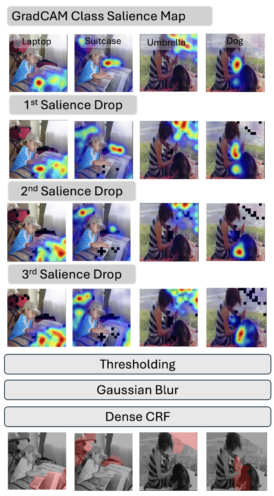
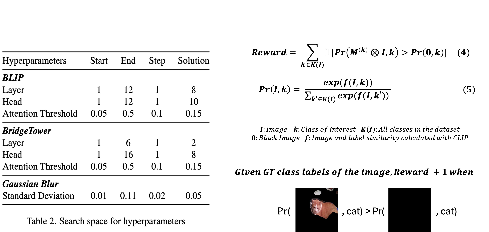
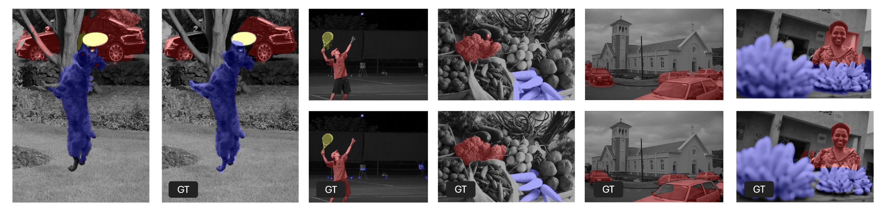

Over-segmentation and Under-segmentation

The naive cross-attention masks are too inclusive (Over-segment) whereas GradCAM is too exclusive (Under-segment). Therefore we proposed to combined Salience Dropout with Gradcam to extract segmentation masks from off-the-shelf VLM for open-set objects.
Salience Dropout
Salience DropOut is an iterative process designed to encourage Vision-Language Models (VLMs) to attend to less discriminative image regions often overlooked by GradCAM. In each iteration, it computes a class-agnostic salience map by summing GradCAM salience maps across predicted classes of the image, then zeros out the top 10 most salient patches. This process is repeated for three iterations, ensuring previously masked regions remain excluded. The final salience map for each class is obtained by summing salience maps from all iterations.
Automatic Dense-label-free Hyperparameter Tuning
To tune the key hyperparameters in PnP-OVSS—namely the cross-attention layer 𝐿, attention head H, and binary threshold T—we propose a weakly supervised reward function that avoids the need for pixel-level labels. Instead, the method only requires knowledge of which classes appear in each image. For each class in an image, the predicted segmentation mask is applied, and the masked image is fed into a pretrained network along with the class name to compute a similarity score. A reward is given if the masked image is more similar to the correct class name than to a black image. These rewards are summed across a validation set to guide hyperparameter search. The final parameters, including the Gaussian blur variance, are selected using simple random search.
Qualitative examples
Qualitative Results of PnP-OVSS + BLIP. Images are from Pascal VOC and COCO Object. The right columns and bottom rows show the ground-truth (GT); the rest are our results. Note the good results on small objects like the frisbee and the tennis racket.
Poster
BibTeX
@misc{luo2024emergentopenvocabularysemanticsegmentation,
title={Emergent Open-Vocabulary Semantic Segmentation from Off-the-shelf Vision-Language Models},
author={Jiayun Luo and Siddhesh Khandelwal and Leonid Sigal and Boyang Li},
year={2024},
eprint={2311.17095},
archivePrefix={arXiv},
primaryClass={cs.CV},
url={https://arxiv.org/abs/2311.17095},}